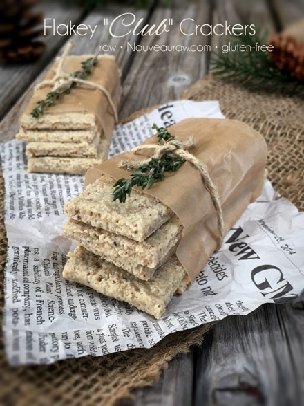
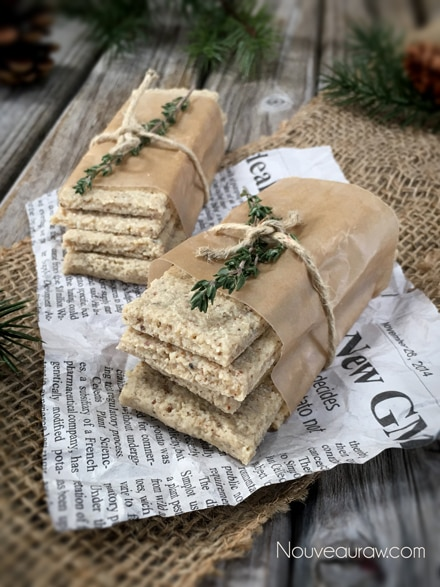

Flakey Club Crackers

~ raw, vegan, gluten-free ~
These crackers are light, airy, crispy and carry a slight hint of butter. My husband raved about them and nothing makes my heart smile like it does when he loves the food I make. Especially when I know it is good for him.
To create the “buttery” flavor in these crackers I used walnuts, macadamia nuts, and rum flavoring. If you don’t have rum flavoring on hand you can omit it and double the measurement of the vanilla extract.
I don’t recommend substituting the walnuts or macadamia. You could, however, use all macadamia nuts instead of the mix but I find macadamia nuts to be so expensive and this helped to keep the cost down.
Nuts, in general, get a bad rap for causing weight gain and like everything else, if they aren’t eaten in moderation, that statement can become true. So don’t fear them, just keep an eye in how many you consume and in the meantime know that nuts can bring some great health benefits as well!
Macadamia nuts are one of the very few plants that contain palmitoleic acid, also known as omega 7, a monounsaturated fatty acid that works to lower your cholesterol, reducing your risk of heart disease. Some studies have also suggested that palmitoleic acid may also affect your body’s metabolism, curbing your appetite and helping you burn fat faster. Can somebody please pass me the bowl of macadamia nuts? hehe
I love the simple and delicate flavor of this cracker and I hope you do too. This recipe does require a little prep work. If you make your own almond meal/flour, you will want to soak and dehydrate the almonds ahead of time. They need to be completely dry before you grind them into flour. Same goes for the walnuts. Macadamia nuts, on the other hand, don’t require soaking because they don’t contain enzyme inhibitors.
My husband insisted that I mention how incredible they taste paired with a new cheese recipe that I came up with… it is called Sweet Cranberry “Cheese” I think it’s time to get busy in the kitchen! What do you think?
Yields 24-36 crackers (depending on how you score them)
Dry Ingredients:
Wet Ingredients:
- 3/4 cup water
- 1 tsp vanilla extract
- 1 tsp rum extract
- 6 drops liquid stevia
- coarse salt for top
Preparation:
- Place the walnuts and macadamia nut in the food processor, fitted with the “S” blade, and process till it starts to break down into small pieces.
- This won’t turn into a fine powder due to the natural oils and be careful that you don’t over-process them, turning them into nut butter.
- Add the almond flour and protein powder. Pulse together to mix.
- You can either leave the skins of the almonds after soaking them or you can remove them. Removing them can sometimes be easier on the digestive system plus it gives that cracker a lighter appearance.
- Measure out 3/4 cup of water. Add the rum extract, vanilla extract, and stevia to the water and stir together.
- Pour the liquid into the food processor and mix till it creates a paste-like consistency.
- If it is too dry and clumpy, add 1 Tbsp of water at a time till it reaches this stage.
- Instead of stevia ~ use 1-2 Tbsp of your favorite sweetener. These crackers aren’t meant to be sweet.
- Instead of rum extract ~ use more vanilla extract
- Spread the mixture on the teflex sheet that comes with the dehydrator.
- The batter will be sticky so dip the spatula in water every now and then to make it easier to spread.
- The batter doesn’t shrink up much so make it the thickness that you want the finished crackers to be.
- Score the crackers into the desired sizes.
- Sprinkle a liberal amount of coarse sea salt on top of the crackers. Remember, these crackers don’t have salt in the batter, so this step is important.
- Dehydrate at 145 degrees (F) for 1 hour, then reduce to 115 degrees (F) for 2 hours.
- Remove and make fork markings on top of the crackers.
- Return to the dehydrator and continue to dry for about 18 more hours.
- About halfway through the drying process, flip the crackers over onto the mesh sheet, and remove the reflex sheet. This will help them dry quicker.
- Remove and cool to room temp. Enjoy!
Culinary Explanations:
- Why do I start the dehydrator at 145 degrees (F)? Click (here) to learn the reason behind this.
- When working with fresh ingredients it is important to taste test as you build a recipe. Learn why (here).
- Don’t own a dehydrator? Learn how to use your oven (here). I do however truly believe that it is a worthwhile investment. Click (here) to learn what I use.

© AmieSue.com